实习项目 01
AI 会议纪要系统
音视频转写、结构化纪要与可视化结果的一体化工作流。
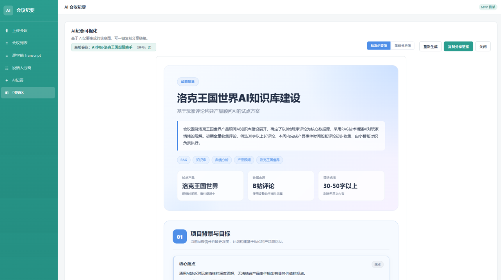
AI Product / Workflow Engineering
从内部工具与流程自动化，到 Agent、科研工作流与用户侧 MVP
把模型能力组织成可运行、可验证的产品原型。
检索证据、任务编排与有依据的自动化输出。
会议处理、批量信息查询与内容工作流。
验证、恢复、质量门控与可复用自动化。
面向团队与用户场景的可运行产品原型。
使用 ← / → 键，或点击导航按钮浏览。
Candidate Snapshot
软件工程本科背景 + 机械工程硕士在读。
2026 年实习期间完成会议智能、批量查询与可控内容生成工作流。
具备端到端 pipeline、质量门控、恢复路径、结构化输出与内部服务交付经验。
具备 CV / RAG / Agent、AI-native Skill、Streamlit 与小程序 MVP 实践。
我的重点是把 AI 能力做成可操作的工作流，用真实界面和验证证据说明价值，也诚实标注能力边界。
Portfolio Overview
音视频转写、结构化纪要与可视化结果的一体化工作流。

批量链接输入、结构化字段返回与表格复制。
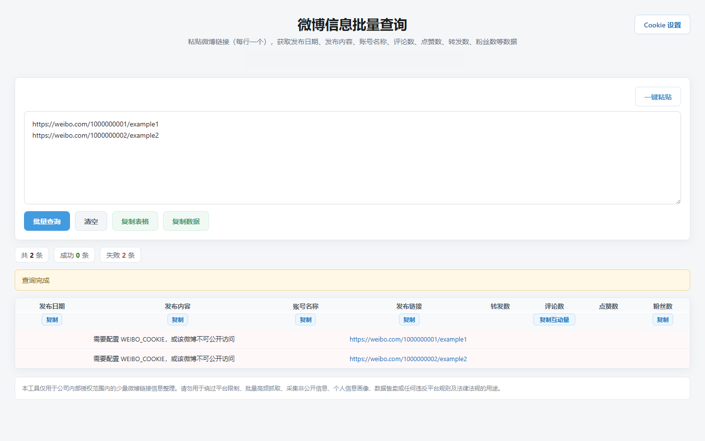
带验证、拒绝和恢复机制的可控内容生成系统。
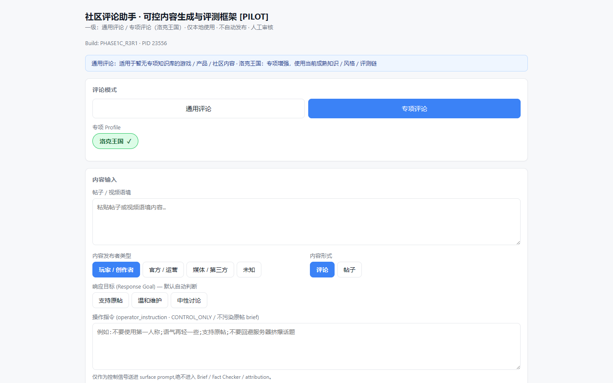
AI 视频分析与自动报告生成产品原型。
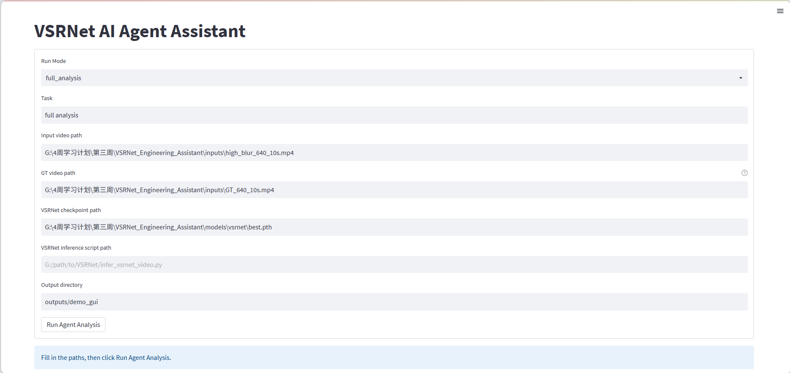
Role Keyword Mapping
| 岗位关键词 | 作品集证据 |
|---|---|
| AI 产品思维 | 用户场景拆解、工作流设计、可用 MVP 边界 |
| AI 应用工作流 | 转写、结构化纪要、检索、生成、验证与恢复 |
| 内部效率工具 | 批量信息查询、表格复制与团队服务交付 |
| RAG / Agent | 检索证据、可复用模式与有依据的报告生成 |
| 质量与安全 | 事实/立场检查、reject-first、人工审核与凭据隔离 |
| 产品原型 | FastAPI / Flask / Electron、Streamlit GUI 与小程序 MVP |
| 项目表达 | 流程图、评测证据、指标、README 与作品集沉淀 |
Technical Foundation
这些动图展示了 VSRNet-Agent 背后的计算机视觉技术基础。
VSRNet-Agent Product Workflow
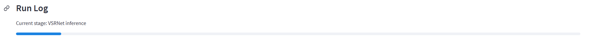
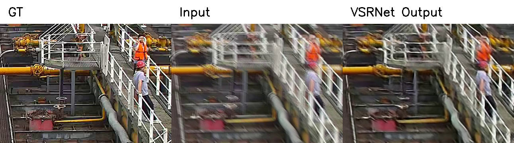
VSRNet-Agent Metrics & Report
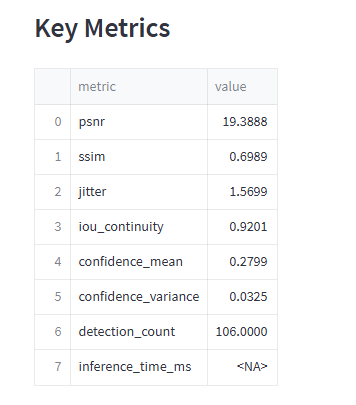
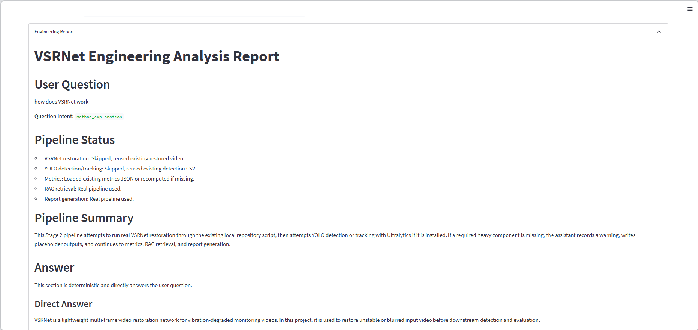
报告基于流程状态、检索证据和指标上下文生成。
AI Meeting Minutes System
把转写、AI 纪要与可视化结果串成一条内部工作流，支持中文与粤语会议内容处理。
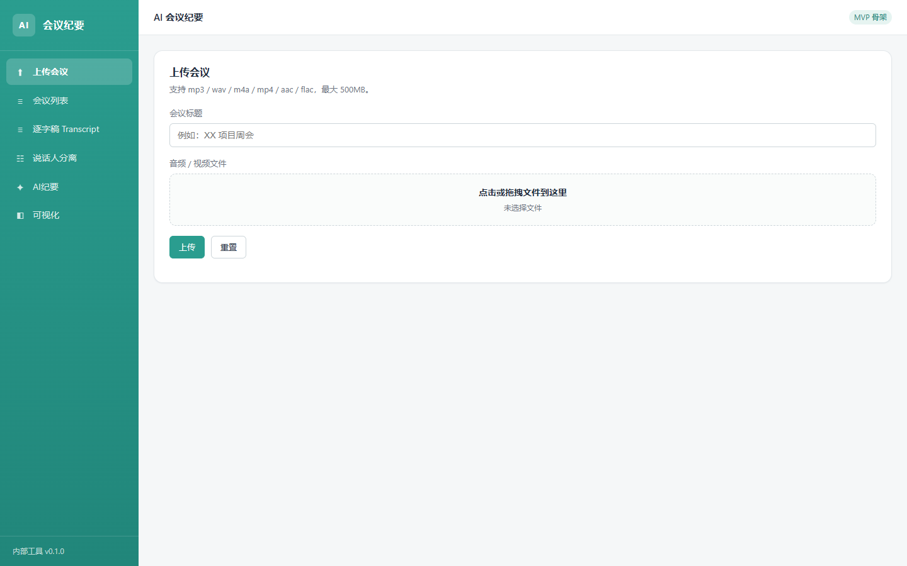
AI 会议纪要 / Product Result
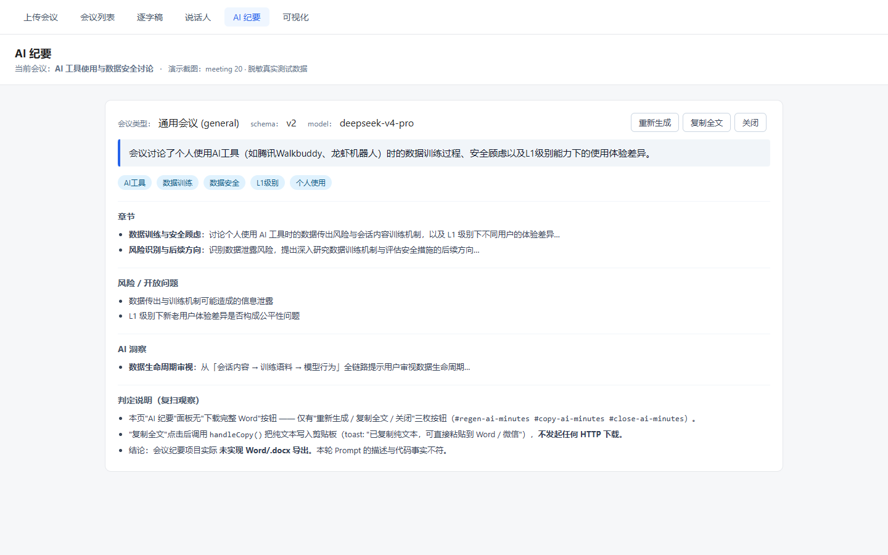
事实边界：最终归档版支持结构化结果与可视化分享；归档代码中未保留 Word / .docx 导出能力。
Weibo Batch Data Query Tool
输入多个公开微博链接，按原顺序返回结构化字段，并衔接表格复制与后续整理流程。
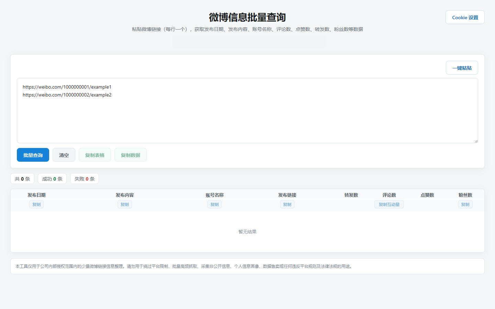
微博信息批量查询 / Workflow
发布时间、内容、账号、原链接、转发、评论、点赞与粉丝数。
支持按列复制、互动量统一复制，并将 42.1 万等单位转换为 421000。
从个人 portable 工具迭代为可由团队访问的内部服务入口。
Cookie 仅在本地隔离处理；作品集截图又增加一层遮挡，不展示内部地址或真实查询数据。
AI 评论助手 / Quality Loop
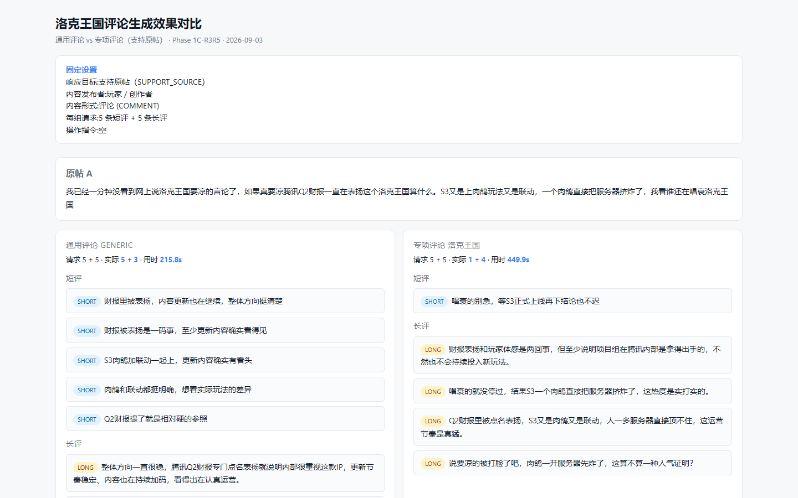
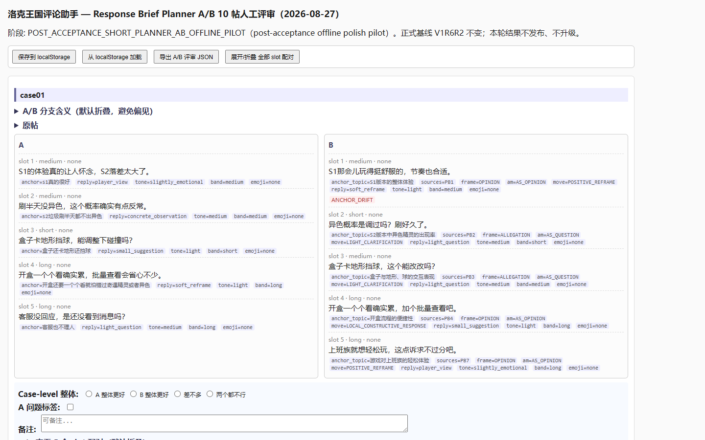
系统只生成待人工审核的内容，自动发布保持关闭；本项目展示工作流验证，不宣称生产规模效果。
Daily GitHub Skill Recommender
把“每天找项目”从手动搜索变成定时自动推荐流程，用于学习规划、项目灵感发现和求职素材积累。
用节点组合自动化流程。
减少每天手动搜索成本。
获取候选仓库信息。
生成推荐理由并推送。
手动找项目重复、分散，也容易中断。
用 Dify 定时完成搜索、推荐、总结、格式化和推送。
Daily GitHub Skill Recommender
按计划自动启动工作流
准备搜索关键词与请求参数
调用 GitHub Search API 获取候选项目
过滤与整理 repo 信息
根据匹配度生成推荐理由
整理为可读日报
发送到个人通知渠道
保存 report_text
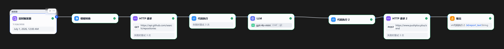
Daily GitHub Skill Recommender
| 日期 | 状态 | 运行时间 | Tokens | 触发方式 |
|---|---|---|---|---|
| 2026-06-27 | SUCCESS | 15.743s | 3900 | Scheduled |
| 2026-06-26 | SUCCESS | 11.933s | 3967 | Scheduled |
| 2026-06-25 | SUCCESS | 14.189s | 3920 | Scheduled |
| 2026-06-24 | SUCCESS | 13.356s | 3909 | Scheduled |
| 2026-06-23 | SUCCESS | 11.884s | 3914 | Scheduled |
| 2026-06-22 | SUCCESS | 12.013s | 3892 | Scheduled |
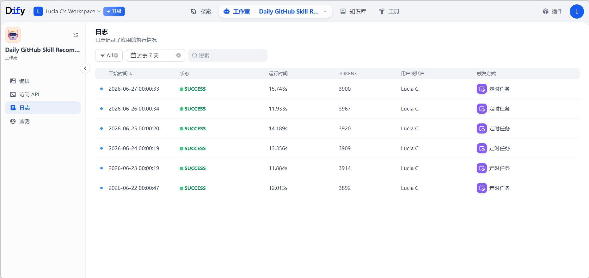
该日志用于展示工作流的连续定时执行记录和稳定运行情况，不代表商业化服务上线。
Grad_Meeting_Agent
Grad_Meeting_Agent 用于帮助研究生从零散材料中提取证据、组织研究主线、整理论文卡片、分析实验洞察、标出证据缺口，并生成组会准备包和导师问答准备。
论文、笔记、实验结果、图像材料、进展记录和 Git commits。
Evidence-first、诚实表达不确定性、可复用、可迁移到不同研究方向。
证据包、讨论问题和个人准备 Q&A。它不是 PPT 生成器。
重点是帮助思考，而不是格式排版：通过可追溯证据和不确定性意识，让组会讨论更清楚。
Grad_Meeting_Agent
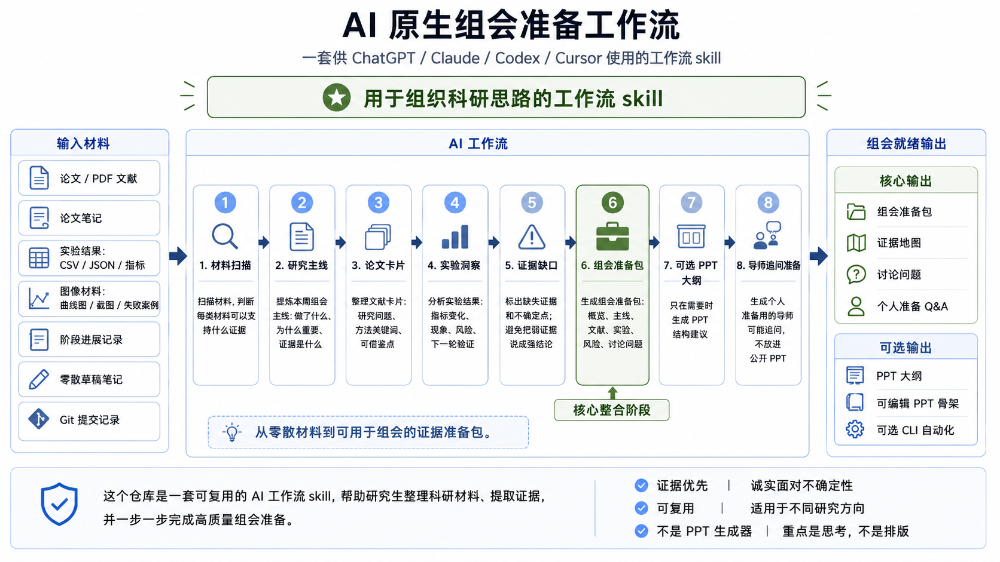
FamilyCare Problem & MVP
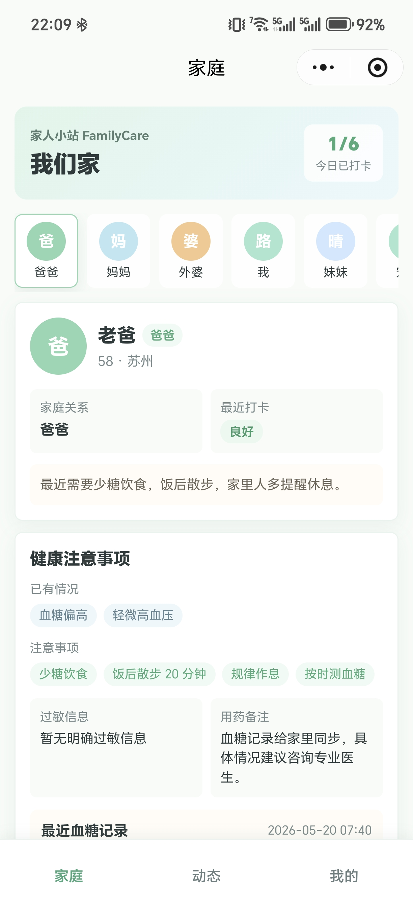
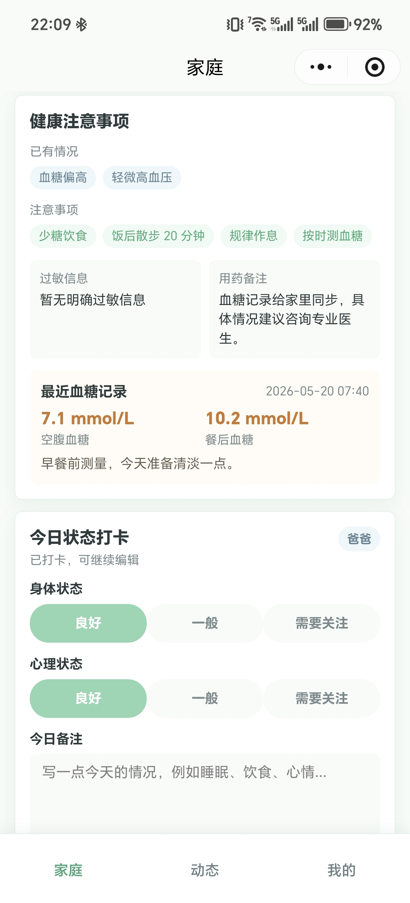
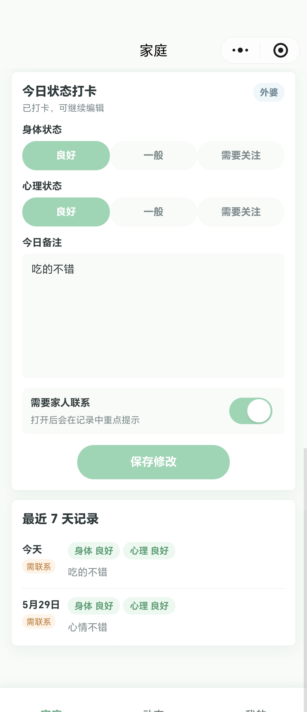
该原型验证家庭成员档案、每日打卡、健康记录、动态发布和成员管理的核心闭环。
FamilyCare Product Design & Interaction
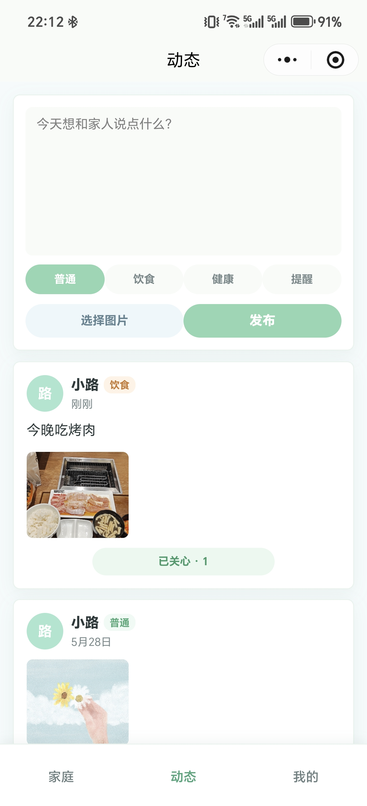
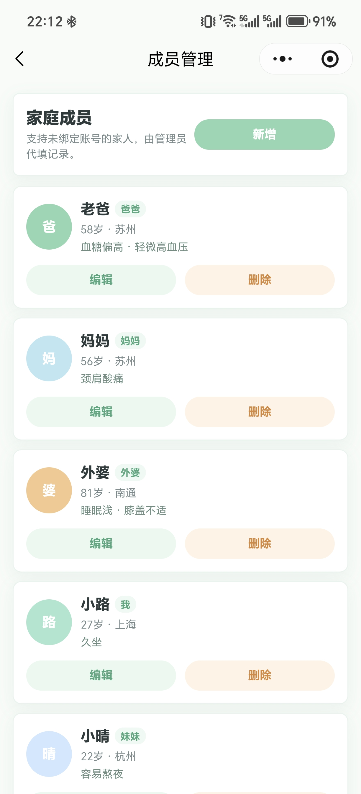
Project Comparison
| 项目 | 核心能力 | 证据 |
|---|---|---|
| AI 会议纪要 | 端到端 AI 应用 | 上传、本地转写、结构化纪要、可视化结果 |
| 微博信息批量查询 | 内部效率工具 | 批量输入、8 字段、复制工作流、失败可见 |
| AI 评论助手 | 可控内容生成 | 质量门控、恢复路径与人工盲测 |
| VSRNet-Agent | AI 工具 + RAG 报告 | Streamlit GUI、CV 指标与有依据报告 |
| Daily GitHub Recommender | 自动化工作流 | Dify 流程、定时日志与通知 |
| Grad_Meeting_Agent | AI-native Skill | 证据优先的科研组会工作流 |
| FamilyCare | 用户侧 MVP | 小程序、打卡、成员与动态流程 |
感谢查看
这份作品集展示的是把 AI 能力连接到真实工作流、质量控制、内部工具和用户侧原型。
把人工流程转化为清晰、可运行的产品工作流。
让输出建立在证据、上下文、验证与恢复机制上。
连接界面、处理逻辑、结构化输出与团队访问入口。
展示可运行证据，并明确说明项目能力边界。
Context-Aware AI Comment Assistant
把单次 Prompt 调用工程化为可控内容工作流
以游戏社区为真实业务场景，拆分短评、长评与帖子路径，并加入明确的质量控制。